首页 > Python > Python编程环境搭建
PyCharm下载和安装教程（包含配置Python解释器）
PyCharm 是 JetBrains 公司（www.jetbrains.com）研发，用于开发 Python 的 IDE 开发工具。图 1 所示为 JetBrains 公司开发的多款开发工具，其中很多工具都好评如潮，这些工具可以编写 Python、C/C++、C#、DSL、Go、Groovy、Java、JavaScript、Objective-C、PHP 等编程语言。
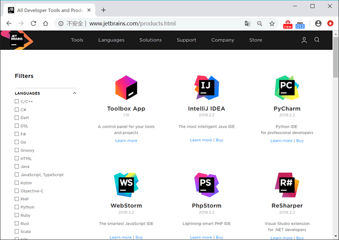
图 1 JetBrains 开发工具
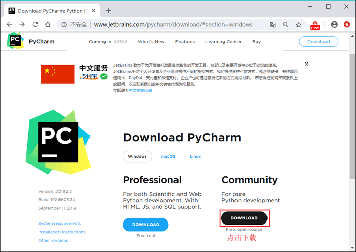
图 2 PyCharm 官方下载页面
强烈建议初学者使用社区版，更重要的是，该版本不会对学习 Python 产生任何影响。
根据图 2 所示点击“下载”按钮，等待下载完成。下载完成后，读者会得到一个 PyCharm 安装包（本节下载的是 pycharm-community-2019.2.2 版本）。双击打开下载的安装包，正式开始安装（如图 3 所示）。
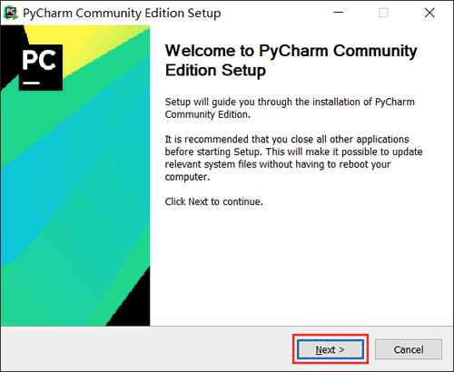
图 3 开始安装界面
直接选择“Next”，可以看到如图 4 所示的对话框，这里是设置 PyCharm 的安装路径，建议不要安装在系统盘（通常 C 盘是系统盘），这里选择安装到 E 盘。
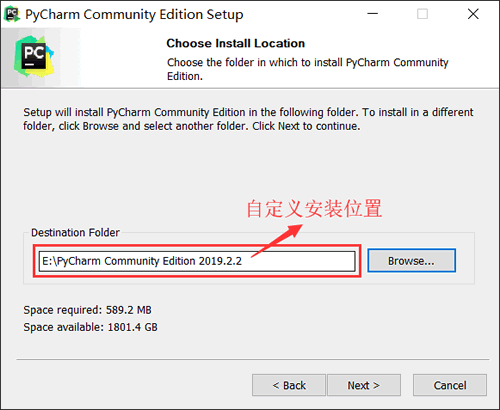
图 4 设置 PyCharm 安装路径
继续点击“Next”，这里需要进行一些设置，可根据图 5 所示，自行选择需要的功能，若无特殊需求，按图中勾选即可；
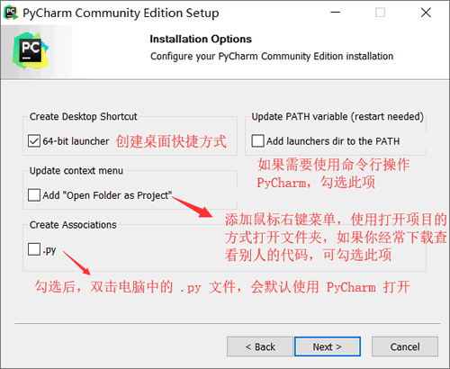
图 5 安装设置对话框
继续点击“Next”，达到图 6 所示的对话框，这里选择默认即可，点击 “Install”，并等待安装进度条达到 100%，PyCharm 就安装完成了。
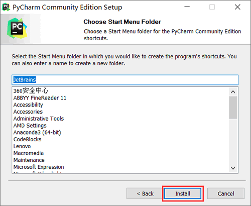
图 6 选择开始菜单文件
需要注意的是，首次启动 PyCharm，会自动进行配置 PyCharm 的过程（选择 PyCharm 界面显式风格等等），读者可根据自己的喜好进行配置，由于配置过程非常简单，这里不再给出具体图示。读者也可以直接退出，即表示全部选择默认配置。
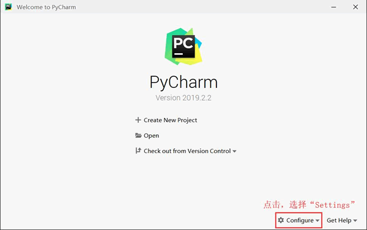
图 8 PyCharm 初始化界面
在此界面中，可以手动给 PyCharm 设置 Python 解释器。点击图 8 所示的 Configure 选项，选择“Settings”，进入图 9 所示的界面。
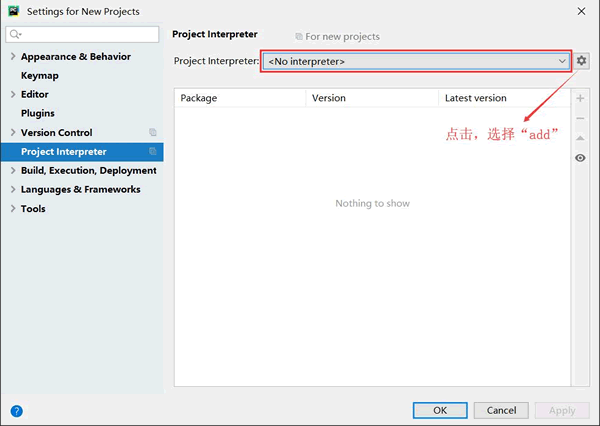
图 9 设置 Python 解释器界面
可以看到，"No interpreter" 表示未设置 Python 解释器，这种情况下，可以按图 9 所示，点击设置按钮，选择"add"，此时会弹出图 10 所示的窗口。
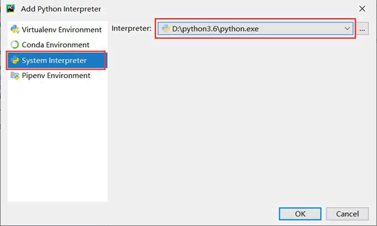
图 10 添加 Python 解释器界面
按照图 10 所示，选择“System Interpreter”（使用当前系统中的 Python 解释器），右侧找到你安装的 Python 目录，并找到 python.exe，然后选择“OK”。此时显式界面会自动跳到图 9 所示的界面，并显示出可用的解释器，如图 11 所示，再次点击“OK”。
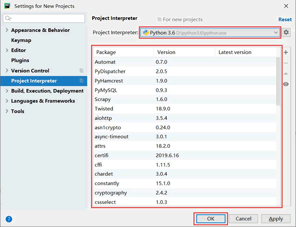
图 11 添加 Python 解释器界面
等待 PyCharm 配置成功，它会再次回到图 8 所示的界面，由此就成功的给 PyCharm 设置好了 Python 解释器。
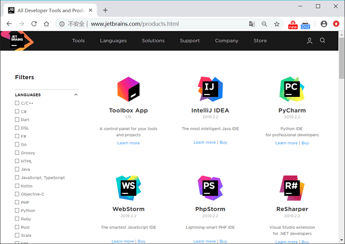
图 1 JetBrains 开发工具
PyCharm下载和安装
进入 PyCharm官方下载页面（如图 2 所示），可以看到 PyCharm 有 2 个版本，分别是 Professional（专业版）和 Community（社区版）。其中，专业版是收费的，可以免费试用 30 天；而社区版是完全免费的。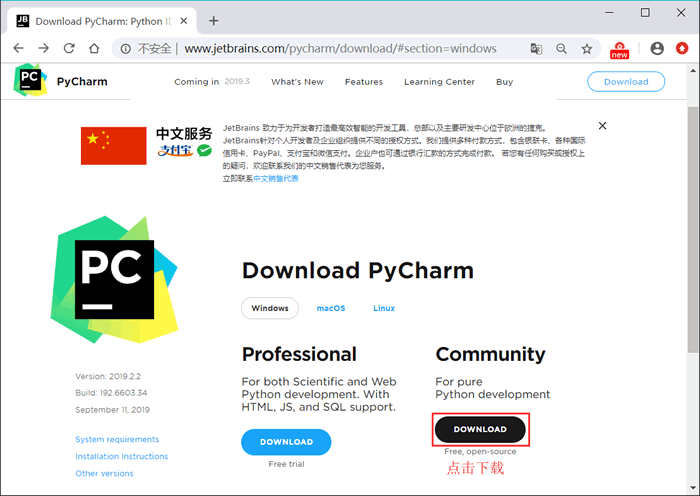
图 2 PyCharm 官方下载页面
强烈建议初学者使用社区版，更重要的是，该版本不会对学习 Python 产生任何影响。
根据图 2 所示点击“下载”按钮，等待下载完成。下载完成后，读者会得到一个 PyCharm 安装包（本节下载的是 pycharm-community-2019.2.2 版本）。双击打开下载的安装包，正式开始安装（如图 3 所示）。
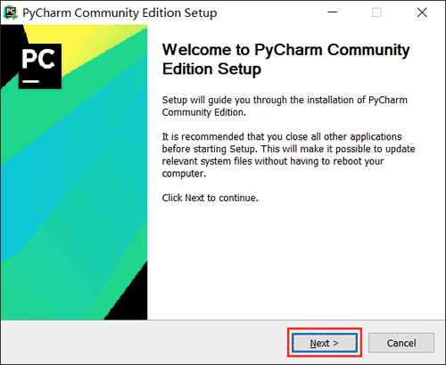
图 3 开始安装界面
直接选择“Next”，可以看到如图 4 所示的对话框，这里是设置 PyCharm 的安装路径，建议不要安装在系统盘（通常 C 盘是系统盘），这里选择安装到 E 盘。
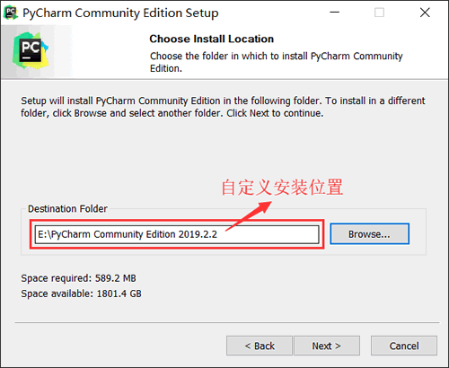
图 4 设置 PyCharm 安装路径
继续点击“Next”，这里需要进行一些设置，可根据图 5 所示，自行选择需要的功能，若无特殊需求，按图中勾选即可；
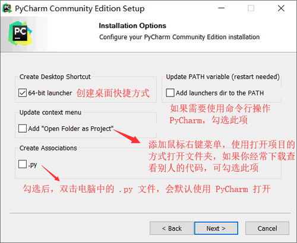
图 5 安装设置对话框
继续点击“Next”，达到图 6 所示的对话框，这里选择默认即可，点击 “Install”，并等待安装进度条达到 100%，PyCharm 就安装完成了。
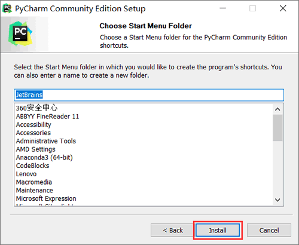
图 6 选择开始菜单文件
需要注意的是，首次启动 PyCharm，会自动进行配置 PyCharm 的过程（选择 PyCharm 界面显式风格等等），读者可根据自己的喜好进行配置，由于配置过程非常简单，这里不再给出具体图示。读者也可以直接退出，即表示全部选择默认配置。
PyCharm配置Python解释器
首先安装 PyCharm 完成之后，打开它会显示如下所示的界面：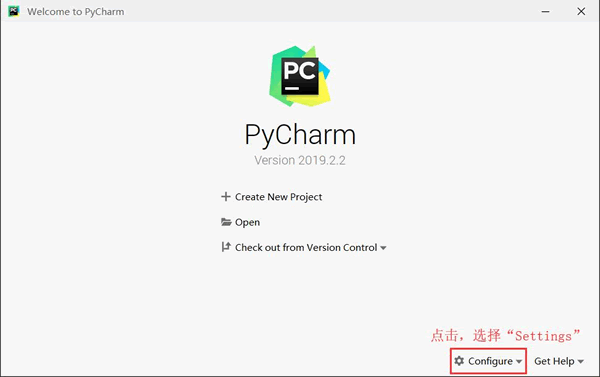
图 8 PyCharm 初始化界面
在此界面中，可以手动给 PyCharm 设置 Python 解释器。点击图 8 所示的 Configure 选项，选择“Settings”，进入图 9 所示的界面。
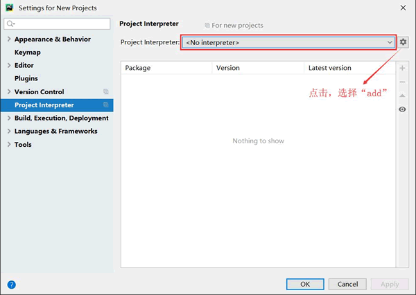
图 9 设置 Python 解释器界面
可以看到，"No interpreter" 表示未设置 Python 解释器，这种情况下，可以按图 9 所示，点击设置按钮，选择"add"，此时会弹出图 10 所示的窗口。
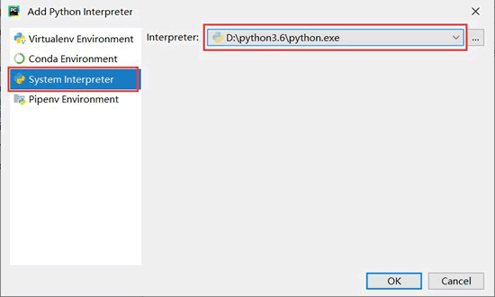
图 10 添加 Python 解释器界面
按照图 10 所示，选择“System Interpreter”（使用当前系统中的 Python 解释器），右侧找到你安装的 Python 目录，并找到 python.exe，然后选择“OK”。此时显式界面会自动跳到图 9 所示的界面，并显示出可用的解释器，如图 11 所示，再次点击“OK”。
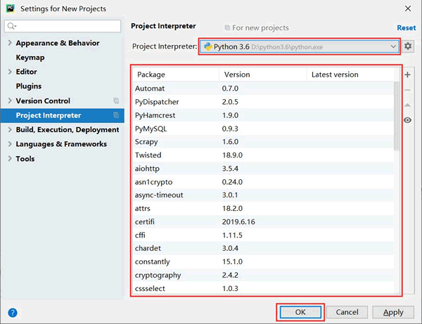
图 11 添加 Python 解释器界面
等待 PyCharm 配置成功，它会再次回到图 8 所示的界面，由此就成功的给 PyCharm 设置好了 Python 解释器。
关于如何使用 PyCharm 运行 Python 程序，可猛击《PyCharm运行Python程序》一文详细了解。
关注公众号「站长严长生」，在手机上阅读所有教程，随时随地都能学习。内含一款搜索神器，免费下载全网书籍和视频。

微信扫码关注公众号